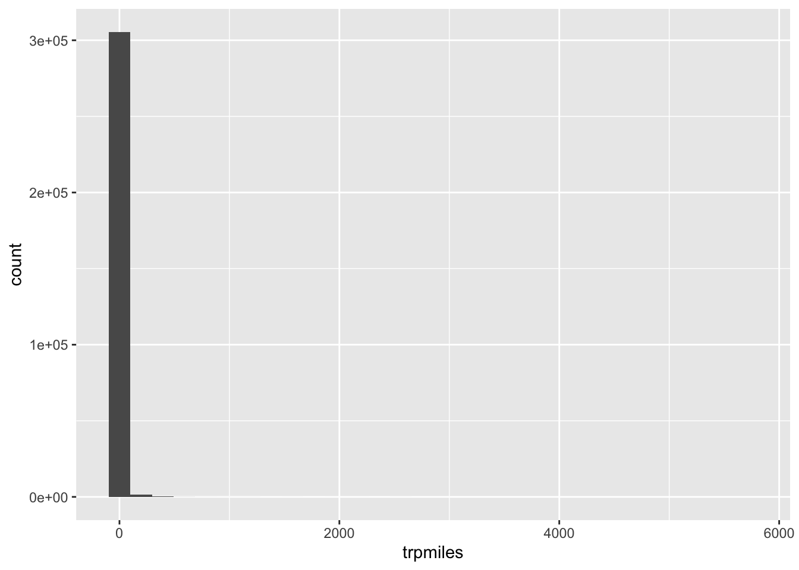
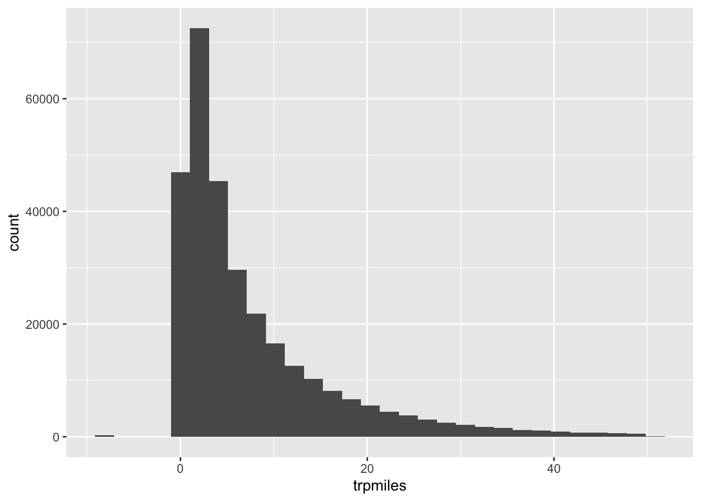
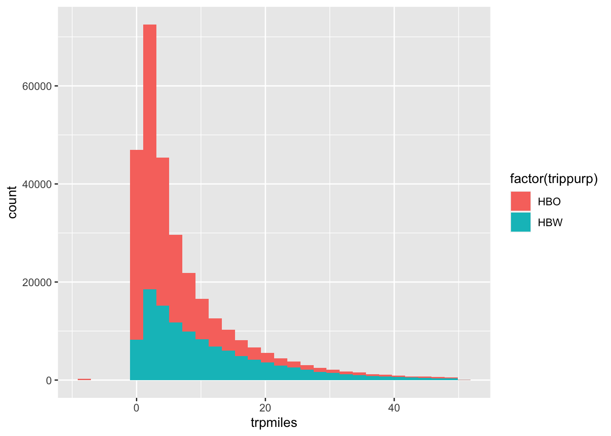
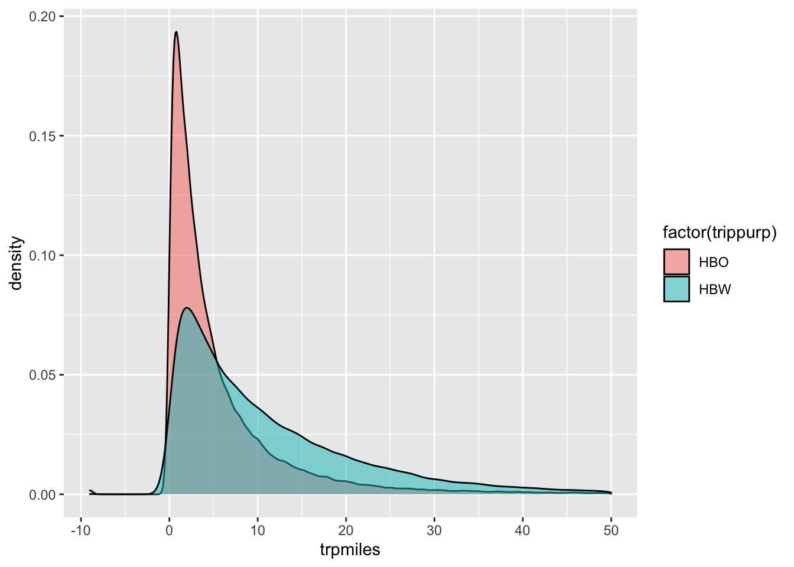
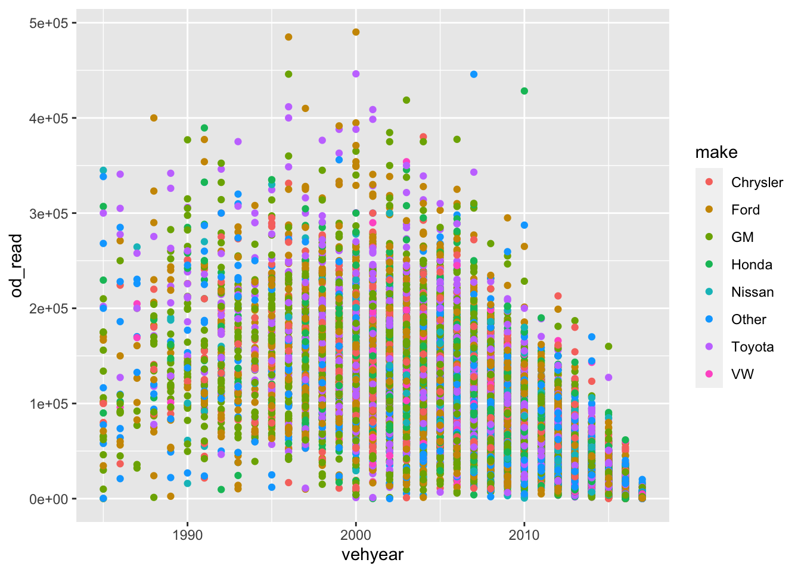
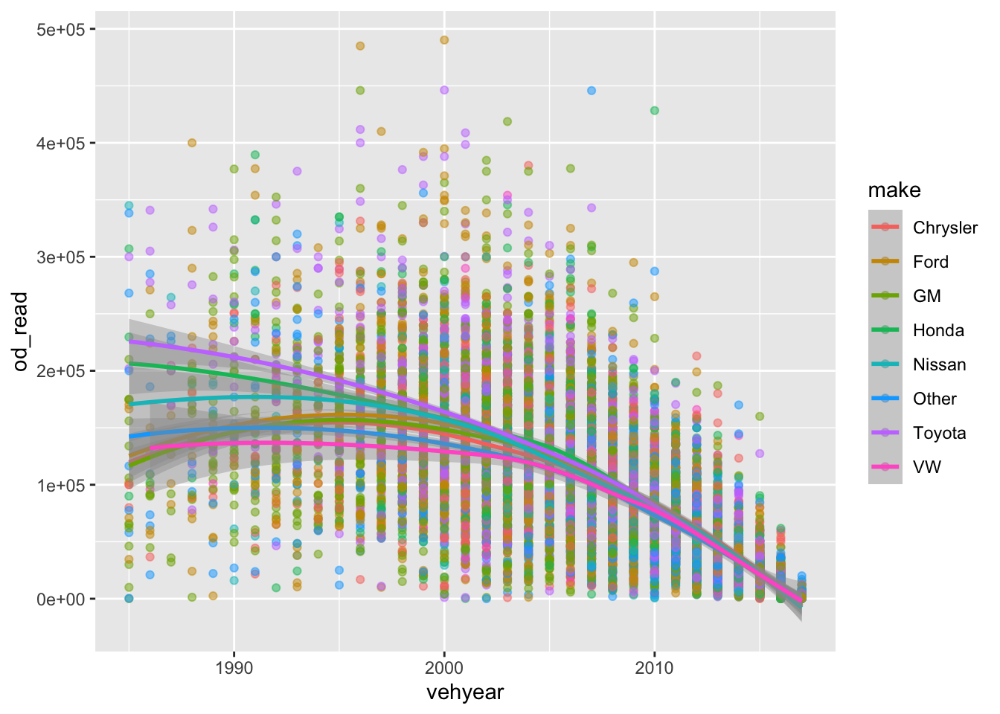
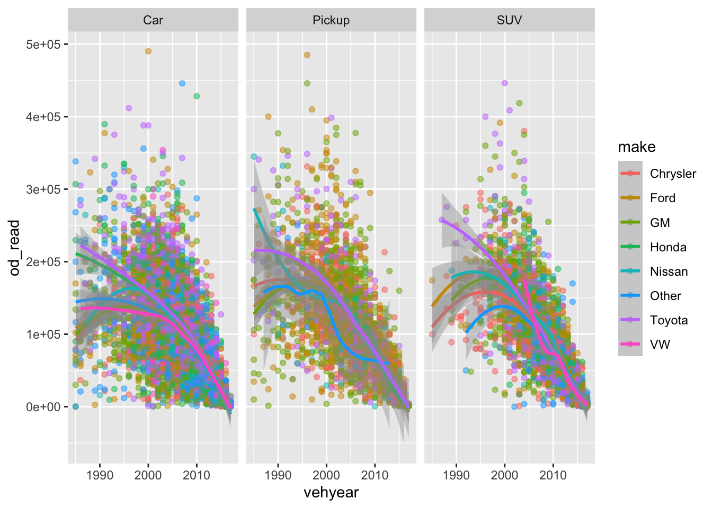

B R and RStudio Help
R is a powerful, open-source statistical programming language used by both professional and academic data scientists. It is among the computer languages most suited to modern data science, and is growing rapidly in its user base and available packages.
Some students may not feel comfortable working in a programming language like R or a console-based application like RStudio, especially if they have used applications primarily through a GUI. This appendix provides a basic bootcamp for R and Rstudio, but cannot be a comprehensive manual on RStudio, and it certainly cannot be one for R. Good places to get more detailed help include:
- R help manuals
- Stack Overflow
Some of the sections in this appendix are text-based, and some contain little more than links to YouTube videos created by me or someone else.
B.1 Installing
There are two pieces of software you should install:
- R https://cran.r-project.org/: this contains the system libraries necessary to run R commands in a terminal on your computer, and contains a few additional helper applications. Install the most recent stable release for your operating system.
- RStudio https://rstudio.com/products/rstudio/download/ is an integrated application that makes using R considerably easier with text completion, file management, and some GUI features.
Both software are available for Windows, MacOS, and Linux. The videos and screenshots of the application I post will use MacOS; the R code for all systems is the same, and the RStudio interface all systems is very similar with minor differences.
B.2 RStudio Orientation
The video below gives a very basic introduction to RStudio. There is also a very useful cheat sheet for working with RStudio on the Rstudio website.
B.3 R Packages
One of the strengths of R is the ability for anyone to write packages. These packages make it easier to read manipulate, and vizualize data; to estimate statistical models; or to communicate results.
There are a number of ways to install additional packages. The most straightforward
is to use the install.packages() function in the console. The problems
in this book are solved with two additional packages10:
install.packages("tidyverse") # a suite of tools for data manipulation
install.packages("mlogit") # discrete choice modelingRStudio also contains a GUI interface to install and update packages.
Sometimes you want to use a package that has not yet been pushed to CRAN, the
international repository of “approved” R packages. This may be because the package
is in development, or for one reason or another does not meet CRAN’s standards
for completeness, etc. Oftentimes, the package has been made available on GitHub.
You can install a package directly from GitHub with the remotes library. One
package you will want for the problems in the book is the nhts2017 package
on the BYU Transportation GitHub account. This package contains datasets from the 2017
National Household Travel Survey.
install.packages("remotes") # tools for installing development packages
remotes::install_github("byu-transpolab/nhts2017")You only need to install a package once on your computer. But every time you
want to use a function in a package, you need to load the package with the
library() function. To load the tidyverse packages, for instance,
library(tidyverse)## ── Attaching packages ─────────────────────────────────────────────────────────── tidyverse 1.3.0 ──## ✓ ggplot2 3.3.2.9000 ✓ purrr 0.3.4
## ✓ tibble 3.0.3 ✓ dplyr 1.0.0
## ✓ tidyr 1.1.0 ✓ stringr 1.4.0
## ✓ readr 1.3.1 ✓ forcats 0.5.0## ── Conflicts ────────────────────────────────────────────────────────────── tidyverse_conflicts() ──
## x dplyr::filter() masks stats::filter()
## x dplyr::lag() masks stats::lag()If you get errors when you run the command above, it means that for some reason you did not install the package correctly. And if you ever get an error like
kable(tibble(x = 1:2, y = c("blue", "red")))## Error in kable(tibble(x = 1:2, y = c("blue", "red"))): could not find function "kable"It often means you didn’t load the library. In this case, the kable() function
to make pretty tables is part of the knitr package.
library(knitr)
kable(tibble(x = 1:2, y = c("blue", "red")))| x | y |
|---|---|
| 1 | blue |
| 2 | red |
You can also use a function from a package without loading the library if you
use the :: operator, like you did in the remotes::install_github() command
earlier. This is handy if you only want to use one function from a package, or
if you have two functions from different packages with the same name. For example,
when you loaded the tidyverse package, R told you that dplyr::filter() would
mask stats::filter(). So if for some reason you wanted to use the filter function
from the stats package, you would need to use stats::filter().
B.4 Working with Tables
Most data you will work with comes in a tabular form, meaning that the data is formatted in columns of variables and rows of observations.
B.4.1 Reading Data
Tabular data is often stored in a comma-separated values .csv file. To read a
data file like this in R, you can use the read_csv() function included in
tidyverse.
trips <- read_csv("data/demo_trips.csv")## Parsed with column specification:
## cols(
## houseid = col_double(),
## personid = col_character(),
## trpmiles = col_double(),
## trippurp = col_character()
## )print(trips)## # A tibble: 924 x 4
## houseid personid trpmiles trippurp
## <dbl> <chr> <dbl> <chr>
## 1 30182694 01 13.6 HBW
## 2 40532989 02 9.38 HBSOCREC
## 3 40729475 01 5.06 HBSHOP
## 4 40290784 01 0.509 HBSOCREC
## 5 30118876 02 0.599 NHB
## 6 30352119 01 20.3 HBO
## 7 30085077 01 22.5 NHB
## 8 30180962 02 0.581 HBSOCREC
## 9 40155356 01 2.74 HBO
## 10 30069734 01 4.65 NHB
## # … with 914 more rowsThis function will make a guess as to what the columns types should be. Often
we want to keep ID values as characters, even if they are numeric (this preserves
leading 0 values, etc.). We can tell read_csv() what types we expect with
the col_types argument.
trips <- read_csv("data/demo_trips.csv", col_types = list(houseid = col_character()))
print(trips)## # A tibble: 924 x 4
## houseid personid trpmiles trippurp
## <chr> <chr> <dbl> <chr>
## 1 30182694 01 13.6 HBW
## 2 40532989 02 9.38 HBSOCREC
## 3 40729475 01 5.06 HBSHOP
## 4 40290784 01 0.509 HBSOCREC
## 5 30118876 02 0.599 NHB
## 6 30352119 01 20.3 HBO
## 7 30085077 01 22.5 NHB
## 8 30180962 02 0.581 HBSOCREC
## 9 40155356 01 2.74 HBO
## 10 30069734 01 4.65 NHB
## # … with 914 more rowsYou can also write tables back to .csv with the write_csv() command.
B.4.2 Modifying and Summarizing Tables
In much of this section, we will work with the nhts_trips dataset of trips
from the 2017 National Household Travel Survey in the nhts2017 package you
installed from GitHub above.
library(nhts2017)
trips <- nhts_trips
trips## # A tibble: 923,572 x 62
## houseid personid tdtrpnum strttime endtime trvlcmin
## <chr> <chr> <dbl> <dttm> <dttm> <dbl+lb>
## 1 300000… 01 1 2017-10-10 10:00:00 2017-10-10 10:15:00 15
## 2 300000… 01 2 2017-10-10 15:10:00 2017-10-10 15:30:00 20
## 3 300000… 02 1 2017-10-10 07:00:00 2017-10-10 09:00:00 120
## 4 300000… 02 2 2017-10-10 18:00:00 2017-10-10 20:30:00 150
## 5 300000… 03 1 2017-10-10 08:45:00 2017-10-10 09:00:00 15
## 6 300000… 03 2 2017-10-10 14:30:00 2017-10-10 14:45:00 15
## 7 300000… 01 1 2017-10-10 11:15:00 2017-10-10 11:30:00 15
## 8 300000… 01 2 2017-10-10 23:30:00 2017-10-10 23:40:00 10
## 9 300000… 01 1 2017-10-10 05:50:00 2017-10-10 06:05:00 15
## 10 300000… 01 2 2017-10-10 07:00:00 2017-10-10 07:15:00 15
## # … with 923,562 more rows, and 56 more variables: trpmiles <dbl+lbl>,
## # trptrans <chr+lbl>, trpaccmp <dbl+lbl>, trphhacc <dbl+lbl>,
## # vehid <chr+lbl>, trwaittm <dbl+lbl>, numtrans <dbl+lbl>, tracctm <dbl+lbl>,
## # drop_prk <chr+lbl>, tregrtm <dbl+lbl>, whodrove <chr+lbl>,
## # whyfrom <chr+lbl>, loop_trip <chr+lbl>, trphhveh <chr+lbl>,
## # hhmemdrv <chr+lbl>, hh_ontd <dbl+lbl>, nonhhcnt <dbl+lbl>,
## # numontrp <dbl+lbl>, psgr_flg <chr+lbl>, pubtrans <chr+lbl>,
## # trippurp <chr+lbl>, dweltime <dbl+lbl>, tdwknd <chr+lbl>,
## # vmt_mile <dbl+lbl>, drvr_flg <chr+lbl>, whytrp1s <chr+lbl>,
## # ontd_p1 <chr+lbl>, ontd_p2 <chr+lbl>, ontd_p3 <chr+lbl>, ontd_p4 <chr+lbl>,
## # ontd_p5 <chr+lbl>, ontd_p6 <chr+lbl>, ontd_p7 <chr+lbl>, ontd_p8 <chr+lbl>,
## # ontd_p9 <chr+lbl>, ontd_p10 <chr+lbl>, ontd_p11 <chr+lbl>,
## # ontd_p12 <chr+lbl>, ontd_p13 <chr+lbl>, tdcaseid <chr>,
## # tracc_wlk <chr+lbl>, tracc_pov <chr+lbl>, tracc_bus <chr+lbl>,
## # tracc_crl <chr+lbl>, tracc_sub <chr+lbl>, tracc_oth <chr+lbl>,
## # tregr_wlk <chr+lbl>, tregr_pov <chr+lbl>, tregr_bus <chr+lbl>,
## # tregr_crl <chr+lbl>, tregr_sub <chr+lbl>, tregr_oth <chr+lbl>,
## # whyto <chr+lbl>, gasprice <chr>, wttrdfin <dbl>, whytrp90 <chr+lbl>B.4.2.1 Select, Filter, and Chains
This table is pretty overwhelming. But there are two functions that can help us pare it down:
select()lets you select columns in a table using the names of the columns.filter()lets you select rows in a table that meet a certain condition.
Let’s practice this by selecting our trips dataset to only include the id
columns, the trip length, and the trip purpose.
select(trips, houseid, personid, trpmiles, trippurp)## # A tibble: 923,572 x 4
## houseid personid trpmiles trippurp
## <chr> <chr> <dbl+lbl> <chr+lbl>
## 1 30000007 01 5.24 HBO [Home-based trip (other)]
## 2 30000007 01 5.15 HBO [Home-based trip (other)]
## 3 30000007 02 84.0 HBW [Home-based trip (work)]
## 4 30000007 02 81.6 HBW [Home-based trip (work)]
## 5 30000007 03 2.25 HBO [Home-based trip (other)]
## 6 30000007 03 2.24 HBO [Home-based trip (other)]
## 7 30000008 01 8.02 HBW [Home-based trip (work)]
## 8 30000008 01 8.02 HBW [Home-based trip (work)]
## 9 30000012 01 3.40 HBSOCREC [Home-based trip (social/recreational)]
## 10 30000012 01 3.40 HBSOCREC [Home-based trip (social/recreational)]
## # … with 923,562 more rowsLet’s also practice filtering the trips dataset to only include trips
of the purpose “HBO” (home-based other). Notice how the number of rows
in the table trips is much smaller.
filter(trips, trippurp == "HBW") # use double equals as comparison## # A tibble: 117,368 x 62
## houseid personid tdtrpnum strttime endtime trvlcmin
## <chr> <chr> <dbl> <dttm> <dttm> <dbl+lb>
## 1 300000… 02 1 2017-10-10 07:00:00 2017-10-10 09:00:00 120
## 2 300000… 02 2 2017-10-10 18:00:00 2017-10-10 20:30:00 150
## 3 300000… 01 1 2017-10-10 11:15:00 2017-10-10 11:30:00 15
## 4 300000… 01 2 2017-10-10 23:30:00 2017-10-10 23:40:00 10
## 5 300000… 01 5 2017-10-10 09:00:00 2017-10-10 09:20:00 20
## 6 300000… 01 7 2017-10-10 15:30:00 2017-10-10 16:05:00 35
## 7 300000… 01 1 2017-10-10 08:00:00 2017-10-10 08:20:00 20
## 8 300000… 01 2 2017-10-10 18:00:00 2017-10-10 20:00:00 120
## 9 300000… 02 3 2017-10-10 09:00:00 2017-10-10 11:00:00 120
## 10 300000… 02 4 2017-10-10 18:30:00 2017-10-10 20:30:00 120
## # … with 117,358 more rows, and 56 more variables: trpmiles <dbl+lbl>,
## # trptrans <chr+lbl>, trpaccmp <dbl+lbl>, trphhacc <dbl+lbl>,
## # vehid <chr+lbl>, trwaittm <dbl+lbl>, numtrans <dbl+lbl>, tracctm <dbl+lbl>,
## # drop_prk <chr+lbl>, tregrtm <dbl+lbl>, whodrove <chr+lbl>,
## # whyfrom <chr+lbl>, loop_trip <chr+lbl>, trphhveh <chr+lbl>,
## # hhmemdrv <chr+lbl>, hh_ontd <dbl+lbl>, nonhhcnt <dbl+lbl>,
## # numontrp <dbl+lbl>, psgr_flg <chr+lbl>, pubtrans <chr+lbl>,
## # trippurp <chr+lbl>, dweltime <dbl+lbl>, tdwknd <chr+lbl>,
## # vmt_mile <dbl+lbl>, drvr_flg <chr+lbl>, whytrp1s <chr+lbl>,
## # ontd_p1 <chr+lbl>, ontd_p2 <chr+lbl>, ontd_p3 <chr+lbl>, ontd_p4 <chr+lbl>,
## # ontd_p5 <chr+lbl>, ontd_p6 <chr+lbl>, ontd_p7 <chr+lbl>, ontd_p8 <chr+lbl>,
## # ontd_p9 <chr+lbl>, ontd_p10 <chr+lbl>, ontd_p11 <chr+lbl>,
## # ontd_p12 <chr+lbl>, ontd_p13 <chr+lbl>, tdcaseid <chr>,
## # tracc_wlk <chr+lbl>, tracc_pov <chr+lbl>, tracc_bus <chr+lbl>,
## # tracc_crl <chr+lbl>, tracc_sub <chr+lbl>, tracc_oth <chr+lbl>,
## # tregr_wlk <chr+lbl>, tregr_pov <chr+lbl>, tregr_bus <chr+lbl>,
## # tregr_crl <chr+lbl>, tregr_sub <chr+lbl>, tregr_oth <chr+lbl>,
## # whyto <chr+lbl>, gasprice <chr>, wttrdfin <dbl>, whytrp90 <chr+lbl>One extremely useful feature of the tidyverse functions is the chain
operator, %>%. This operator basically does the opposite of the assigment
operator <-. While assignment says “take the thing on the right and put it in
the thing on the left,” chain says “take the thing on the left and pass it as
the first argument of the function on the right.” What this means in practice is
we can chain R commands together. So we can do the select and the filter
statements in sequence,
trips %>%
select(houseid, personid, trpmiles, trippurp) %>%
filter(trippurp == "HBW")## # A tibble: 117,368 x 4
## houseid personid trpmiles trippurp
## <chr> <chr> <dbl+lbl> <chr+lbl>
## 1 30000007 02 84.0 HBW [Home-based trip (work)]
## 2 30000007 02 81.6 HBW [Home-based trip (work)]
## 3 30000008 01 8.02 HBW [Home-based trip (work)]
## 4 30000008 01 8.02 HBW [Home-based trip (work)]
## 5 30000012 01 4.29 HBW [Home-based trip (work)]
## 6 30000012 01 6.82 HBW [Home-based trip (work)]
## 7 30000039 01 11.5 HBW [Home-based trip (work)]
## 8 30000041 01 73.7 HBW [Home-based trip (work)]
## 9 30000041 02 77.9 HBW [Home-based trip (work)]
## 10 30000041 02 77.8 HBW [Home-based trip (work)]
## # … with 117,358 more rowsNotice that we didn’t have to tell the select and filter functions the
name of the table we were selecting or filtering. The %>% chain operator did
that for us.
Once we have the table we want, we can assign it to a new object called mytrips
In this case, let’s get HBO and HBW trips.
mytrips <- trips %>%
select(houseid, personid, trpmiles, trippurp) %>%
filter(trippurp %in% c("HBW", "HBO")) # use %in% for multiple comparisons.B.4.3 Mutate, Summarize, and Group
Sometimes we want to calculate a new column in a table, or recompute an
existing column. We can do that with the mutate function, and we can
put more than one calculation in a single mutate statement.
mytrips %>%
mutate(
tripkm = trpmiles * 1.60934, # convert miles to km.
longtrip = ifelse(tripkm > 50, TRUE, FALSE) # is trip longer than 50 km?
)## # A tibble: 307,390 x 6
## houseid personid trpmiles trippurp tripkm longtrip
## <chr> <chr> <dbl+lbl> <chr+lbl> <dbl+lbl> <lgl>
## 1 30000007 01 5.24 HBO [Home-based trip (other)] 8.44 FALSE
## 2 30000007 01 5.15 HBO [Home-based trip (other)] 8.29 FALSE
## 3 30000007 02 84.0 HBW [Home-based trip (work)] 135. TRUE
## 4 30000007 02 81.6 HBW [Home-based trip (work)] 131. TRUE
## 5 30000007 03 2.25 HBO [Home-based trip (other)] 3.62 FALSE
## 6 30000007 03 2.24 HBO [Home-based trip (other)] 3.61 FALSE
## 7 30000008 01 8.02 HBW [Home-based trip (work)] 12.9 FALSE
## 8 30000008 01 8.02 HBW [Home-based trip (work)] 12.9 FALSE
## 9 30000012 01 4.29 HBW [Home-based trip (work)] 6.91 FALSE
## 10 30000012 01 6.82 HBW [Home-based trip (work)] 11.0 FALSE
## # … with 307,380 more rowsOther times we want to calculate summary statistics like means.
For this we can use the summarize() function.
mytrips %>%
summarize(
mean_trip = mean(trpmiles),
sd_trip = sd(trpmiles),
max_trip = max(trpmiles),
min_trip = min(trpmiles)
)## # A tibble: 1 x 4
## mean_trip sd_trip max_trip min_trip
## <dbl> <dbl> <dbl> <dbl>
## 1 9.81 32.1 5699. -9Finally, we sometimes want to calculate summary statistics for different groups.
We can tell tidyverse to group our tables with the group_by() function.
mytrips %>%
group_by(trippurp) %>%
summarize(
mean_trip = mean(trpmiles),
sd_trip = sd(trpmiles),
max_trip = max(trpmiles),
min_trip = min(trpmiles)
)## `summarise()` ungrouping output (override with `.groups` argument)## # A tibble: 2 x 5
## trippurp mean_trip sd_trip max_trip min_trip
## <chr+lbl> <dbl> <dbl> <dbl> <dbl>
## 1 HBO [Home-based trip (other)] 7.73 32.0 5699. -9
## 2 HBW [Home-based trip (work)] 13.2 31.9 2927. -9As you might expect, work trips are on average longer than other kinds of trips. But some people report very long trips! You might want to filter your data more carefully for real analyses.
B.5 Graphics with ggplot2
The ggplot2 package included in the tidyverse is a very powerful graphics
engine with a relatively easy-to-learn grammar. In fact, the gg stands for
“grammar of graphics” as it implements the grammar defined by
Wilkinson (2012).
The basic structure of a ggplot2 call is constructed as follows:
ggplot(data, aes(data aesthetics like x and y coordinates, fill color, etc.)) +
geom_(geometry style like point, bar, or histogram) +
other things like theme, color, and labelsFor instance, we can create a histogram of trip lengths in the NHTS by giving
the x aesthetic as the trpmiles column in the mytrips dataset.
ggplot(mytrips, aes(x = trpmiles)) +
geom_histogram()## Don't know how to automatically pick scale for object of type haven_labelled. Defaulting to continuous.## `stat_bin()` using `bins = 30`. Pick better value with `binwidth`.
This ends up not being very informative because some trips are very long. We
could filter out the long trips within the data argument (Note that we still have
the -9 values from the missing information).
ggplot(mytrips %>% filter(trpmiles < 50), aes(x = trpmiles)) +
geom_histogram()## Don't know how to automatically pick scale for object of type haven_labelled. Defaulting to continuous.## `stat_bin()` using `bins = 30`. Pick better value with `binwidth`.
If we wanted to see the difference between lengths of different trip purposes, we could add a color aesthetic to the plot. By default this stacks the two categories on top of each other.
ggplot(mytrips %>% filter(trpmiles < 50), aes(x = trpmiles, fill = factor(trippurp))) +
geom_histogram()## Don't know how to automatically pick scale for object of type haven_labelled. Defaulting to continuous.## `stat_bin()` using `bins = 30`. Pick better value with `binwidth`.
You could also show this with a statistical density (the integral of a density
function is 1). Note that the alpha statement for fill opacity is not included
as an aesthetic, because it doesn’t vary based on any data elements in the way that
the x and fill variables do.
ggplot(mytrips %>% filter(trpmiles < 50), aes(x = trpmiles, fill = factor(trippurp))) +
geom_density(alpha = 0.5)## Don't know how to automatically pick scale for object of type haven_labelled. Defaulting to continuous.
ggplot2 also excels at building statistical analysis on top of visualization.
For example, we can see the odometer reading for cars still on the road in
2017 by make.
set.seed(15) # so that we pull the same random records each time
# sample 15k vehicles built after 1980 with 0 to 500k miles
vehicles <- nhts_vehicles %>%
# convert numeric make to its labeled name, and then group into manufacturers
mutate(
make = as_factor(make, levels = "labels"),
vehtype = as_factor(vehtype, levels = "labels"),
make = case_when(
make %in% c("Toyota", "Lexus", "Subaru") ~ "Toyota",
make %in% c("Ford", "Lincoln", "Mercury") ~ "Ford",
make %in% c("Chevrolet", "GMC", "Pontiac", "Buick", "Cadillac", "Saturn") ~ "GM",
make %in% c("Volkswagen", "Audi", "Porsche") ~ "VW",
grepl("Jeep", make) | grepl("Chrysler", make) | make %in% c("Ram", "Dodge", "Plymouth") ~ "Chrysler",
make %in% c("Honda", "Acura") ~ "Honda",
make %in% c("Nissan/Datsun", "Infiniti") ~ "Nissan",
TRUE ~ "Other" # all other makes
) ,
vehtype = case_when(
grepl("Car", vehtype) ~ "Car",
grepl("Van", vehtype) ~ "Van",
grepl("SUV", vehtype) ~ "SUV",
grepl("Pickup", vehtype) ~ "Pickup",
TRUE ~ "Other",
)
) %>%
filter(vehtype != "Other") %>%
filter(vehyear > 1980) %>%
filter(od_read > 0, od_read < 500000) %>%
sample_n(15000)
ggplot(vehicles, aes(x = vehyear, y = od_read, color = make)) +
geom_point()## Don't know how to automatically pick scale for object of type haven_labelled. Defaulting to continuous.
## Don't know how to automatically pick scale for object of type haven_labelled. Defaulting to continuous.
This is pretty unreadable. But we can add a few things to the figure to make it a little bit easier to understand, like smooth average lines and point transparency.
ggplot(vehicles, aes(x = vehyear, y = od_read, color = make)) +
geom_point(alpha = 0.5) +
stat_smooth(method = "loess")## Don't know how to automatically pick scale for object of type haven_labelled. Defaulting to continuous.
## Don't know how to automatically pick scale for object of type haven_labelled. Defaulting to continuous.## `geom_smooth()` using formula 'y ~ x'
Let’s break this out by vehicle type.
ggplot(vehicles, aes(x = vehyear, y = od_read, color = make)) +
geom_point(alpha = 0.5) +
stat_smooth(method = "loess") +
facet_wrap(~vehtype)## Don't know how to automatically pick scale for object of type haven_labelled. Defaulting to continuous.
## Don't know how to automatically pick scale for object of type haven_labelled. Defaulting to continuous.## `geom_smooth()` using formula 'y ~ x'
And let’s clean it up a little bit. This is a figure that you could put in a published journal article or thesis, if it showed something you cared to show.
ggplot(vehicles, aes(x = vehyear, y = od_read, color = make)) +
geom_point(alpha = 0.5) +
scale_color_discrete("Manufacturer") +
stat_smooth(method = "loess") +
facet_wrap(~vehtype) +
xlab("Vehicle Model Year") + ylab("Odometer Reading") +
theme_bw()## Don't know how to automatically pick scale for object of type haven_labelled. Defaulting to continuous.
## Don't know how to automatically pick scale for object of type haven_labelled. Defaulting to continuous.## `geom_smooth()` using formula 'y ~ x'
References
tidyverseis actually a collection of very useful packages, and many R users just load them all at once.↩︎